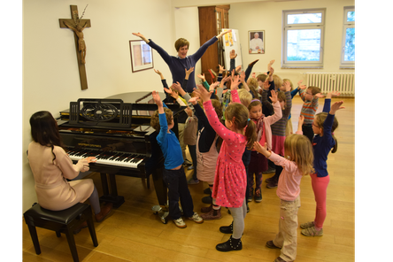

Kinder- und Jugendchor am Erfurter Dom
Kinder- und Jugendchor am Erfurter Dom
Der Kinder- und Jugendchor hat sich seit seiner Gründung im Jahr 2003 zu einem großen, gleichstimmig singenden Chor entwickelt. Zu den wöchentlichen Proben kommen insgesamt über 130 Mädchen und Jungen.

Im Chor erfahren die Kinder und Jugendlichen Gemeinschaft in einer frohen, jungen und lebendigen Kirche. Mädchen und Jungen zwischen 3 und 20 Jahren, die Spaß am gemeinsamen Singen haben und qualifizierte Musik erleben wollen, sind herzlich eingeladen dazu zu kommen. Die Teilnahme an den Proben ist kostenfrei. Voraussetzung sind Freude an Musik und die Bereitschaft zur regelmäßigen Teilnahme an den Proben.
Der Kinder- und Jugendchor gliedert sich in vier Gruppen, in denen altersspezifisch geprobt wird.
A-Chor
| Alter | 5.-12. Klasse |
| Chorprobe | Freitags, 16.30 bis 18.30 Uhr |
| Stimmgruppenprobe | Dienstags, 16.30 bis 17.30 Uhr, im dreiwöchigen Rhythmus |
| Probenraum | Brunnenkirche, Fischersand 24, 99084 Erfurt |
Mädchen und Jungen nach der Grundschulzeit werden in den A-Chor des Kinder- und Jugendchores aufgenommen. Der A-Chor singt mehrstimmige Literatur für gleiche Stimmen (Sopran und Alt), angefangen bei Stücken Alter Meister bis hin zu zeitgenössischen Werken. Zu den wöchentlichen Gesamtproben kommen Stimmgruppen-Proben hinzu. Innerhalb der Probenzeit bekommen die Kinder individuellen Unterricht in Stimmbildung. Der A-Chor singt an Sonn- und Festtagen in der Liturgie im Erfurter Dom. Gelegentlich stehen zudem Konzerte, Chorfahrten und auswärtige Chorauftritte auf dem Programm. Das jährliche, auswärtige Probenwochenende ist eine Zeit intensiver Probenarbeit, aber auch der Pflege der Chorgemeinschaft mit gemeinschaftlicher Freizeitgestaltung, geistlichen Impulsen und gemeinsamen Gebetszeiten.
B-Chor
| Alter | 3.-4. Klasse |
| Chorprobe | Freitags, 15.30 bis 16.40 Uhr |
| Probenraum | Brunnenkirche, Fischersand 24, 99084 Erfurt |
Die Kinder werden auf altersgerechte Weise an das Noten- und Rhythmuslesen herangeführt, lernen den Umgang mit einer Partitur und machen Übungen zum mehrstimmigen Singen. So werden sie auf das Singen im A-Chor vorbereitet. Es werden Choräle und einstimmige Messvertonungen aus verschiedenen Epochen eingeübt. Im B-Chor dürfen die Kinder bereits gelegentlich im Gottesdienst im Dom singen, sowohl mit eigenen Programmen als auch bei gemeinsamen Auftritten mit dem A-Chor. Weiterhin wird in der Regel einmal im Jahr ein Singspiel mit biblischen Thema einstudiert und aufgeführt.
C-Chor
| Alter | 5 Jahre bis 2. Klasse |
| Chorprobe | Freitags, 14.30 bis 15.15 Uhr |
| Probenraum | Brunnenkirche, Fischersand 24, 99084 Erfurt |
Im Vorchor oder C-Chor entdecken die Kinder ihre eigene, natürliche Singstimme. Die Mädchen und Jungen dieser Altersstufe lernen gemeinsam mit mehreren Kindern in gleicher Tonlage zu singen; auf spielerische Weise werden Artikulationsfähigkeit, Rhythmusgefühl, Hören und Singen geschult. Die Kinder lernen die Grundlagen chorischer Arbeit kennen und werden auf die Chorarbeit im B- und A-Chor des Kinder- und Jugendchores vorbereitet. Im C-Chor werden geistliche und weltliche Lieder eingeübt, die Liedauswahl nimmt dabei Bezug auf Kirchenjahr und Jahreszeiten.
Spatzenchor
| Alter | 2-4 Jahre |
| Chorprobe | Dienstags, 15.30 bis 16.15 Uhr |
| Probenraum | Richard-Wetz-Saal, Domstraße 9, Eingang Stiftsgasse, 99084 Erfurt |
Gemeinsam mit ihren Eltern und mit Gleichaltrigen erfahren die Kinder einen Zugang zur musikalischen Welt. Über das gemeinsame Singen, Hören, Musizieren und Bewegen wird auf spielerische Weise die musikalische Veranlagung geweckt und entwickelt. Die Kinder lernen dabei wesentliche Elemente der Musik kennen wie Tonhöhe, Tondauer, Rhythmus und Dynamik. Orff´sche Instrumente begleiten Verse und Lieder mit einfachen Rhythmen. Das gemeinsame Singen und Spielen ist eingebettet in den Jahreskreis mit seiner Prägung durch die christlichen Feste.